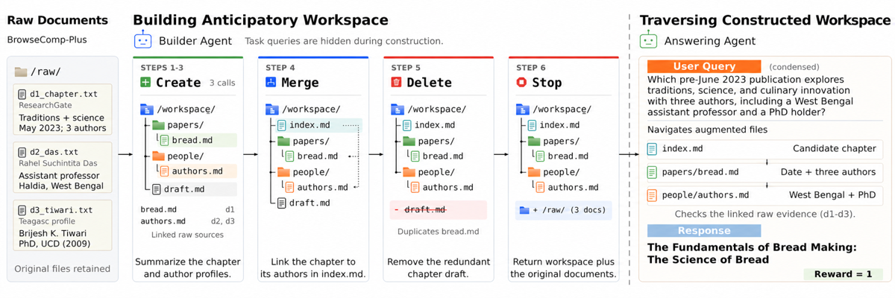
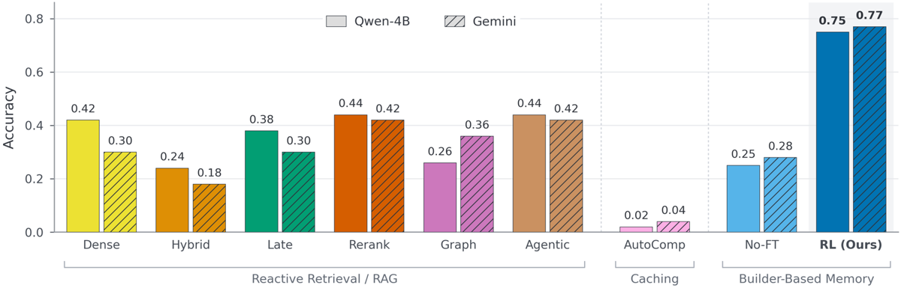
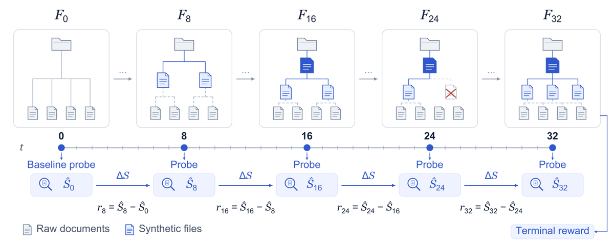

Un builder 4B apprend par GRPO à transformer un corpus plat en arborescence de fichiers synthétiques — quatre actions CreateFile / MergeFiles / Delete / Stop, horizon 32 tours — et son reward est l'exactitude d'un answering agent gelé sur des questions que le builder ne voit jamais ; l'index n'est donc plus un heuristique (entités, communautés, chunks) mais une politique optimisée sur l'aval [§2.3, §2.4].
Claim principal : +33 points d'accuracy sur BrowseComp-Plus contre la meilleure baseline de retrieval/précalcul, et +31 points en zero-shot sur BRIGHT [abstract].
Pourquoi ce papier compte pour la mission de vérification — et c'est là que la lecture retourne complètement la lecture d'abstract : ce papier semble entraîner ce qui construit l'index de relecture, mais le code publié montre que toute l'évaluation quantitative tourne avec la ré-interrogeabilité coupée. answerer_workspace_mode = "synthetic_only" est câblé en dur dans le runner d'éval BrowseComp+ et dans le script d'entraînement, et workspace.py:1145 ne matérialise les documents bruts dans l'espace de l'answerer que si mode == "synthetic_plus_raw". Vérification empirique sur les logs publiés : raw_doc_read_count = 0.0 sur les 100 lignes corpus×bras de results/browsecomp_per_corpus.jsonl. Le desideratum « Faithful Fallback » du §2.2 et l'exemple de récupération par lien de provenance [Fig. 7] ne sont soutenus par aucun chiffre du papier. Ce que ce papier établit est donc l'inverse du couplage qui vous intéresse : une mémoire compacte sans relecture possible bat un top-k de chunks à budget de lecture apparié. Il ne dit rien sur la valeur marginale de la relecture indexée — la condition existe dans le code et n'est jamais chiffrée.
Origine — deux benchmarks tiers, zéro annotation humaine, zéro tâche écrite à la main.
| BrowseComp-Plus | BRIGHT-derived QA | |
|---|---|---|
| Source | Tevatron/browsecomp-plus, commit 0469490…, 830 lignes, SHA-256 du JSONL publié (2,13 Go) [data/splits/browsecomp_plus_source.json] |
xlangai/BRIGHT, converti de retrieval en génération : chaque requête appariée à une réponse de référence fixe [App. A.2] |
| Split | 680 train / 50 held-out / 100 exclus [reported_aggregates.json] ; held-out : 458 docs evidence, 177 gold, 4 358 négatifs |
150 questions (AOPS/Biology/StackOverflow, 50 chacune) ; corpus par domaine = gold docs de toutes les questions + distracteurs, plafonné à 50 documents [REPRODUCING.md] |
| Rôle | entraînement du builder + éval principale | zero-shot uniquement (builder entraîné sur BrowseComp) |
⚠️ Les 100 question_ids exclus (data/splits/excluded_ids.jsonl) ne sont justifiés nulle part : ni dans le papier, ni dans le README du dossier splits. 12 % du benchmark retiré sans critère écrit.
Volume et difficulté — distribution de difficulté : non précisé, sur les deux benchmarks. Aucune stratification, aucun pass@k du modèle de base par tâche.
Filtrage — aucun filtrage de tâches. excluded_qids_jsonl est passé au trainer mais la liste n'est pas motivée.
Curriculum — aucun. 10 epochs sur les 680 tâches, reshuffle_each_epoch=true, seed 2 [train_browsecomp_plus.sh].
SFT/IFT avant RL — aucun. RL direct depuis Qwen3.5-4B, LoRA r=32.
Contamination et séparation train/test — voir §7.1 (c) en détail. Résumé : séparation au niveau du couple (corpus, requête), propre ; mais le reward d'entraînement d'un corpus donné est calculé sur une seule requête, celle attachée à ce corpus (SyntheticFilesystemReward n'a qu'un champ question et un champ gold_answer, singuliers — dataset.py:210-211). Aucun contrôle de contamination de BrowseComp-Plus ou BRIGHT dans le pré-entraînement de Qwen3.5 ou de Gemini 3.1 : non précisé.
Les 443 questions amorties sont générées par Gemini 3.1 Flash Lite few-shot sur des exemples DeepDive, 7 à 10 par corpus [§4(2)] — soit le même modèle que l'answering agent et que le juge. ⚠️ Générateur de requêtes = répondeur = juge : trois rôles, un modèle, aucune mesure de l'effet.
Coût humain — nul. Coût déplacé sur l'API : par rollout de construction, jusqu'à 4 probes × 4 répétitions + 4 répétitions terminales = jusqu'à 20 épisodes complets d'answering agent (32 tours chacun) par trajectoire de builder, plus les appels de juge. Chiffrage total : non précisé.
Deux harnesses imbriqués — et le second tourne à l'intérieur du reward du premier.
F_t = documents bruts D + fichiers/dossiers/liens de référence synthétiques créés jusqu'ici [§2.3]. Navigation par outils sur raw_docs/, synthetic_fs/, history/ [App. prompts].CreateFile — consolide un sous-ensemble de docs bruts et/ou de fichiers synthétiques en un nouveau fichier, avec liens de provenance vers les sources utilisées ;MergeFiles — agrège des fichiers synthétiques en un artefact de niveau supérieur (résumé / index / dossier), les enfants devenant imbriqués ;Delete — retire un fichier synthétique redondant ; ne supprime jamais un document brut ;Stop — termine la construction.CreateFile et MergeFiles délèguent la rédaction à un executor gelé Qwen3.5-35B-A3B (T=0, 512 tokens de sortie, 16 000 caractères de source max) [App. A.5, train_browsecomp_plus.sh]. La politique 4B décide quoi consolider, avec quoi, où le ranger — pas ce qui est écrit dedans. C'est important pour lire le gain : l'intelligence rédactionnelle est constante entre le bras RL et le bras No-FT, mais la compression elle-même vient du 35B.H = 32 tours, 1 024 tokens par action, trajectoire plafonnée à 60 000 tokens [App. A.5].builder_compaction_enabled=true, builder_compaction_model=gemini-3.1-flash-lite-preview, déclenchement à 3 000 tokens, keep_recent_turns=1, 500 tokens de sortie, 30 000 caractères d'entrée. L'historique du builder est donc réécrit par un modèle tiers dès 3 k tokens, en ne conservant qu'un tour récent. ⚠️ C'est exactement la propriété de préfixe cassée du catalogue d'infra : la séquence au tour t+1 n'est plus un préfixe de celle au tour t, la trajectoire devient une forêt de préfixes, et le ratio d'importance par token de loss_fn=importance_sampling porte sur des contextes reconstruits. Le papier ne mentionne ni le problème ni un traitement. Avec H=32 et un seuil à 3 k, la compaction se déclenche presque certainement plusieurs fois par trajectoire.step_tool_error_penalty et step_non_construction_turn_penalty, tous deux à 0 dans le run du papier. Le comportement sur appel non parsable n'est documenté nulle part dans le papier : non précisé.max_token_capped_failure dans les logs — voir §7.1 (b), c'est un confondant majeur du bras de base.README.md de conventions + les entrées synthétiques de niveau racine déjà chargées dans le contexte, puis navigation [App. prompts].{"action":"list_files","path":"."} et {"action":"read_file","path":…,"start_line":…,"num_lines":…} — ou une ligne FINAL ANSWER: <…> [App. prompts].paper_browsecomp.json].synthetic_only. Les documents bruts ne sont pas écrits dans l'espace de l'answerer (workspace.py:1142-1150). Les liens DIRECT_SOURCE_RAW_DOCS figurent dans les en-têtes de fichiers synthétiques (workspace.py:657,665) mais ne sont pas résolvables dans cette configuration. Mode alternatif synthetic_plus_raw implémenté et jamais chiffré.reward.py:173) : en mode synthetic_only, si synthetic_read_count <= 0, la réponse est scorée 0 sans même appeler le juge — une réponse produite de mémoire paramétrique, sans avoir lu un seul fichier synthétique, ne rapporte rien au builder. C'est un vrai contrôle de fuite au moment de la prédiction, et il mériterait d'être dans le papier.Aucune trajectoire de builder n'est recopiée. Les deux illustrations sont des captures d'arborescence [Fig. 2, Fig. 5] et une capture de récupération par provenance [Fig. 7], cette dernière hors de la configuration évaluée.
Succès attendu d'un filesystem :
S(F) := E_{q~Q} E_{ỹ~π_ans(·|q,F)} [ Acc(ỹ, y*(q)) ], avec Acc ∈ {0,1} [§2.3].
Utilité, pénalisée en navigation :
U(F) := S(F) − λ_tok·C_tok(F) − λ_read·C_read(F) [éq. 1].
Clause notable, recopiée : « Before averaging over queries and answering rollouts, each rollout's cost is multiplied by its correctness indicator. Navigation penalties therefore apply only to correct answers: an incorrect answer receives zero utility regardless of its navigation cost. »
Objectif sparse : r^sparse := U(F_H) − α·Σ_{t=1}^H Cost_build(A_t) [éq. 2].
Objectif dense idéal : r_t^dense := U(F_t) − U(F_{t−1}) − α·Cost_build(A_t) [éq. 3], qui télescope sous γ=1 : Σ_t r_t^dense = r^sparse − U(F_0) [éq. 4] — reward shaping potentiel-based au sens de Ng et al. 1999, donc optimum inchangé.
Dans le run du papier : λ_tok = λ_read = α = 0 [§2.3, App. A.5, et paper_browsecomp.json où les 10 termes de shaping sont à 0]. Le reward est donc l'accuracy aval pure, plus les deltas de probe.
|Δ| ≥ 0,25 et deltas négatifs autorisés [App. A.5, paper_browsecomp.json]. Avec 4 répétitions, le quantum d'accuracy est exactement 0,25 : le seuil annule donc le bruit d'une seule répétition — choix défendable, mais il rend aussi le signal de process très grossier (5 valeurs possibles, 3 après seuillage).answerability_probe_min_maturity = 0.45 — les probes ne se déclenchent qu'une fois le filesystem assez mûr. Un détail de design absent du papier et qui change la densité réelle du reward en début d'épisode.reward.py). C'est cohérent avec la courbe d'entraînement publiée, qui dépasse 1,0 et monte jusqu'à 1,4156 [results/training_reward.csv].{"correctness": 0 or 1}, 64 tokens de sortie.reward_mode=hybrid : exact-match d'abord (après normalisation articles/ponctuation/casse, reward.py:1469-1487), juge LLM seulement si l'exact-match échoue. Une erreur d'appel au juge est scorée 0 (except Exception → judge_score = 0.0) — un faux négatif silencieux, loggé (judge_error) mais non rapporté.loss_fn=importance_sampling, advantages calculés par step en suivant les implémentations multi-turn de type Kevin [baronio2025kevin] [§2.3].configs/paper_browsecomp.json + scripts/train_browsecomp_plus.sh) :| modèle | Qwen3.5-4B, LoRA rank 32 |
| lr | 4e-5 |
| batch size | 8 · group size 4 (= 32 rollouts/step) |
| epochs / max_steps | 10 / 850 |
| température de rollout | 1,0 |
| tokens par action | 1 024 ; trajectoire 60 000 |
| horizon | 32 tours builder / 32 tours answerer |
| γ | 1,0 |
| clip de reward terminal | [−1, +3] |
| seed | 2 (une seule) |
| sauvegardes | save_every=85, rolling_save_every=1 |
| checkpoint rapporté | step 55 (BrowseComp+) / step 89 (BRIGHT) |
| KL, clipping PPO, normalisation d'advantage | non précisé — aucun des trois n'apparaît ni dans le papier ni dans la config publiée |
training_reward.csv, 54 points, step 0→53] : 0,278 au step 0, ~0,5 vers le step 25, 1,33 au step 50, avec des creux à 0,266 (step 23), 0,313 (step 46) et 0,403 (step 51) — soit une variance inter-step du même ordre que la pente, sur un seul seed.CHECKPOINTS.md déclare que l'éval BRIGHT utilise le step 89. Soit le run a continué au-delà de ce qui est publié, soit les deux chiffres de tête viennent de deux runs différents. Le papier ne mentionne pas l'existence de deux checkpoints.TINKER_API_KEY requis), executor servi en vLLM derrière une URL, answerer/juge/compacteur sur l'API Gemini.Le papier n'en rapporte aucun. Section Limitations honnête mais sur d'autres axes (corpus statiques, scalabilité du contexte du builder, compression des needle-in-a-haystack, quand contourner la couche synthétique) [§6].
⚠️ Est-ce crédible vu le reward ? Partiellement. Le reward n'a ni bonus de format, ni pénalité de longueur, ni pénalité d'erreur d'outil (tous à 0) : il y a donc peu de surfaces de hacking « cosmétique ». Mais trois voies restent ouvertes et non testées :
α=0 : rien ne décourage de créer massivement. Et c'est exactement ce que la politique apprend — de 4,8 à 53,4 fichiers actifs et de 1 006 à 8 813 tokens synthétiques lus par requête, soit ×8,8 [Tab. 4]. Le papier lit ça comme « richer hierarchical memories » ; c'est aussi la réponse optimale à un reward sans pénalité de coût. Les auteurs ont le terme α dans leur formalisation et ne l'ont jamais activé.builder_task_conditioned=False par défaut et non activé), mais l'executor 35B qui rédige voit jusqu'à 16 000 caractères de source — il peut extraire le fait qui est la réponse sans qu'aucun mécanisme ne le distingue d'un résumé. Aucun contrôle.Les corrections ne sont donc ni évaluées ni nécessaires — faute d'avoir cherché les failure modes.
stream_minibatch_groups_per_batch=8, stream_minibatch_num_minibatches=8, max_concurrent_rollout_groups=1. Answerer concurrency 8 à l'éval, answerer_repeat_concurrency=1 à l'entraînement.RESULTS.md, protocole des 443 questions]. Le dépôt reconnaît explicitement la divergence : « These values correspond to distinct evaluation protocols and are reported separately. » Le papier n'en expose qu'un à la fois.| Chiffre (abstract / intro) | Source dans le corps | Verdict |
|---|---|---|
| « outperforms the strongest retrieval and precomputation baselines by 33 percentage points on BrowseComp-Plus » | Fig. 4 (valeurs lues sur la figure, recoupées sur RESULTS.md) : Qwen3.5-4B — Dense 0,42 · Hybrid 0,24 · Late 0,38 · Rerank 0,44 · Graph 0,26 · Agentic 0,44 · AutoComp 0,02 · No-FT 0,25 · RL 0,75. Gemini — 0,30 · 0,18 · 0,30 · 0,42 · 0,36 · 0,42 · 0,04 · 0,28 · 0,77 |
sur-généralisé. +33 est la moyenne de deux colonnes : +31 pp (0,75 − 0,44) avec Qwen3.5-4B, +35 pp (0,77 − 0,42) avec Gemini. Aucun réglage ne vaut 33. Le chiffre par réglage le moins favorable est +31. |
| « generalizes zero-shot to unseen domains on BRIGHT with a 31-point average accuracy improvement » | Tab. 3 : pass@1 moyen Librarian 52,0 ± 2,8 vs meilleure baseline Dense 20,8 ± 2,9 → +31,2 | confirmé sur la moyenne, et massivement sur-généralisé au-delà. Par domaine : AOPS 36,0 ± 5,6 vs Hybrid 33,0 ± 6,4 → +3,0, intervalles largement recouvrants, non significatif ; Biology 34,5 vs 19,5 → +15,0 ; Stack Overflow 85,5 vs 11,5 → +74,0. La moyenne de +31 est portée par un domaine sur trois, avec un facteur 7,4× qui n'a aucun équivalent ailleurs dans le tableau. |
| « amortizes upfront construction costs across repeated queries » | App. A.4 : −33,8 % de tokens par réponse correcte à 10 q/corpus ; crossover à 31 q/corpus, IC [18, 54] | confirmé mais borné : en tokens bruts par requête, Librarian reste plus cher à toute charge ; l'amortissement n'existe qu'après normalisation par l'accuracy, et seulement contre le builder de base — jamais contre les baselines de retrieval. |
| « improves accuracy by an average of 33 percentage points over the best performing baseline » [intro] | idem ligne 1 | sur-généralisé (moyenne de deux réglages présentée comme un gain unique). |
| « \methodname{} achieves an accuracy of 0.75 » [§4(1)] vs Tab. 1 « Librarian 0.77 » | Fig. 4 : 0,75 = Qwen3.5-4B, 0,77 = Gemini. Tab. 1 est entièrement la colonne Gemini (GraphRAG 0,36, No-FT 0,28) | confirmé après désambiguïsation, mais la juxtaposition de deux colonnes sans l'écrire est une source d'erreur de lecture. |
| « averaging 53.4 active synthetic files … compared with 4.8 files » [§4(3)] | Tab. 4, macro-moyenne : RL 53,4 / 45,4 / 8,0 vs Base 4,8 / 4,2 / 0,6 | confirmé. |
| « improves accuracy from 0.24 to 0.64 on the amortized variant » [Tab. 2] | Tab. 2 : 0,242 ± 0,036 → 0,637 ± 0,029 ; RESULTS.md : 24,15 % (107/443) → 63,66 % (282/443), gain apparié 39,50 pp, IC [31,47 ; 47,75] |
confirmé au dénominateur complet, mais confondu : browsecomp_per_corpus.jsonl montre 14 corpus sur 50 en max_token_capped_failure pour le bras de base (contre 0/50 pour le bras RL), soit 125 questions scorées 0 pour cause d'échec de construction. Recalcul sur les 36 corpus où le builder de base a terminé : 33,65 % (107/318) contre 63,66 % → le gain tombe de +39,5 à +30,0 pp. Environ un quart de l'écart de tête est une panne de harness, pas une différence de curation. |
| « reads 26.9 files and 9,346 tokens per query » [Tab. 2] | Tab. 5 : 26,9 fichiers, 9 040 tokens synthétiques, 9 309 au total | confirmé (9 346 = Tab. 2, 9 309 = Tab. 5 ; écart de protocole non expliqué, négligeable). |
Référence croisée fausse : le §A.4 renvoie à « the original one-question-per-corpus BrowseComp+ evaluation reported in Figure 3 » ; dans le PDF compilé c'est la Figure 4. Référence écrite à la main plutôt que par \ref.
État : F_t, le filesystem courant = documents bruts D + fichiers, dossiers et liens de référence synthétiques créés jusqu'à t, avec métadonnées de type et de parent [§2.3]. Markovien par construction, puisque l'état est l'artefact. Mais l'observation que reçoit réellement la politique est l'historique de tours compacté par Gemini dès 3 k tokens : la politique n'observe pas F_t, elle observe un résumé de son propre passé — l'hypothèse markovienne tient sur l'état, pas sur ce que voit l'agent.
(i) Sur quoi porte l'action ? Les trois, mais asymétriquement :
- quoi indexer — oui, c'est le cœur : CreateFile choisit le sous-ensemble de documents bruts et/ou de fichiers synthétiques à consolider ;
- comment découper — partiellement : l'action choisit le regroupement (quels documents ensemble) et la place dans la hiérarchie (MergeFiles crée le niveau supérieur, les enfants s'imbriquent), mais pas le découpage intra-document : il n'y a ni chunking, ni fenêtre, ni granularité de passage dans l'espace d'actions. Le grain minimal est le document ;
- quoi jeter — oui mais borné : Delete ne retire que des fichiers synthétiques de l'espace actif, jamais un document brut. La réduction de corpus n'est donc jamais destructive au sens strict… sauf que dans la configuration évaluée (synthetic_only) les documents bruts ne sont pas accessibles à l'answerer, ce qui rend la distinction sans effet observable.
(ii) Le reward est-il l'exactitude aval, et le consommateur est-il gelé ? Oui aux deux, et c'est la force du design. S(F) = E_q E_ỹ [Acc] avec π_ans explicitement gelé : « By default, we treat the answering agent π_ans as fixed during builder optimization. This isolates the learning problem » [§2.4], et App. A.5 : « The answering agent and evaluator also remain fixed throughout builder optimization. » Le papier mentionne une variante jointe (builder + answerer co-adaptés, façon RLAD) comme extension non réalisée — aucun chiffre. Donc : pas de co-évolution, le gain est attribuable à l'artefact. ⚠️ Nuance : l'executor 35B et le compacteur Gemini sont gelés aussi, mais ils sont dans la boucle de construction — l'entraînement optimise une politique de 4B paramètres qui pilote un pipeline dont l'essentiel de la capacité est ailleurs.
(iii) Le délai action→reward, et l'attribution de crédit. C'est le point le mieux traité du papier, et il ne résout pas le problème de fond.
- Délai nominal : jusqu'à 32 tours entre une action d'indexation et le reward terminal.
- Densification : probes d'answerability tous les 8 tours, ≤ 4 par épisode. Le délai maximal tombe donc de 32 à 8 tours.
- Garantie invoquée : télescopage [éq. 4] — Σ_t r_t^dense = r^sparse − U(F_0), avec U(F_0) fixe, donc potential-based shaping et politique optimale inchangée [ng1999policy]. Structurellement honnête, et c'est la même famille d'argument que l'ancrage par trajectoire du corpus : le shaping redistribue, il n'injecte pas.
- Ce que ça ne fait pas : à l'intérieur d'un bloc de 8 tours, les 8 actions reçoivent le même delta. Il n'y a aucune attribution par action. Et le seuil |Δ| ≥ 0,25 fait que la plupart des blocs reçoivent 0 : avec 4 répétitions d'answerer, il faut qu'une répétition entière bascule pour que le bloc soit crédité. En pratique le signal dense est ternaire et rare.
- Verdict : ils ne traitent pas l'attribution fine, ils réduisent l'horizon effectif de 32 à 8 et s'appuient sur l'invariance du shaping pour que cette approximation ne change pas l'optimum. C'est la réponse la plus propre du corpus à ce problème précisément parce qu'elle ne prétend pas le résoudre. Ce qui manque, et que le corpus réclame : le placebo de permutation — mêmes magnitudes de delta, positions permutées entre blocs, à densité égale. Sans lui, on ne sait pas si les probes aident parce qu'elles créditent le bon bloc ou parce qu'elles densifient. Le papier ne compare même pas sparse (éq. 2) à hybrid : il n'y a aucune ablation du reward.
(i) Baseline triviale forte, à budget d'indexation apparié. Partiellement présente, et mieux que la moyenne du corpus.
- Chunking de taille fixe + BM25 nu + embedding standard : oui, et avec de vrais réglages — chunks de 768 tokens, overlap 96, candidate depth 100, top-k 12, max 2 chunks par source ; embedding Qwen3-Embedding-4B (dim 1024), reranker Qwen3-Reranker-0.6B, late interaction Reason-ModernColBERT [configs/bright_baselines.json, passage_retrieval.py].
- Le budget de lecture est effectivement apparié, et c'est le point le plus solide du papier : 12 chunks × 768 tokens ≈ 9,2 k tokens de contexte retrouvé, contre 9,0 k tokens synthétiques lus par l'answerer de Librarian [Tab. 5]. On ne peut pas expliquer +31 pp par « Librarian lit plus ».
- ⚠️ Mais le harness de réponse n'est pas apparié du tout. L'answerer de Librarian est un agent 32 tours qui liste, lit, itère et décide quand répondre, à 512 tokens de génération par tour. Les baselines reçoivent un prompt unique avec les documents retrouvés et la consigne « Return only the final short answer. Do not include explanation… », 128 tokens de sortie, un seul appel [App. A.7, run_bright_baselines.sh]. Agentic RAG fait plusieurs recherches mais son prompt dit « Do not answer the question » : il ne sélectionne que des chemins, puis le même répondeur single-shot répond. Aucune baseline n'a de répondeur multi-tours. Le +31/+35 mélange donc deux effets : couche synthétique curée et répondeur agentique itératif. Le contrôle décisif — même agent de navigation 32 tours, mêmes outils list_files/read_file, sur raw_docs/ plat, sans couche synthétique — n'existe pas. C'est la case baselines perdue.
- S'ajoutent deux modèles gelés dans le pipeline Librarian (executor 35B, compacteur Gemini) qu'aucune baseline ne reçoit.
(ii) Bras placebo — décisions de curation permutées, à volume conservé. Présent, et c'est le meilleur de ce papier [Tab. 7, App. A.5] : deux interventions préservant le contenu sur les mêmes mémoires, 435 questions sur 49 corpus, seed de transformation 20260924, protocole de réponse apparié, bootstrap par cluster de corpus, et un validateur qui vérifie que les payloads et identifiants de nœuds sont inchangés, que le flattening retire bien toutes les arêtes parent et que le shuffling préserve le profil de profondeur :
| Organisation | Accuracy (%) | Tokens de navigation |
|---|---|---|
| Original | 55,86 ± 2,58 | 3 635 ± 216 |
| Flattened | 57,70 ± 2,81 | 5 497 ± 356 |
| Shuffled | 51,72 ± 2,87 | 3 612 ± 221 |
Lecture, et elle est sévère pour le claim de tête : - Aplatir la hiérarchie n'abîme pas l'accuracy — elle l'améliore de +1,8 pp. Le seul coût est la navigation, +1 862 tokens/question (IC [1 474 ; 2 274]). La hiérarchie n'achète pas de justesse, elle achète du débit. - Permuter le placement sémantique à profondeur identique coûte −4,14 pp (IC [−7,50 ; −0,91]) sans rien économiser en navigation. Donc le placement sémantique vaut quelque chose, mais ≈ 4 points. - ⚠️ Conclusion d'attribution : sur les ~31 à 35 points annoncés, au plus ~4 à 6 points sont imputables à l'organisation du workspace. Le reste vient de l'existence même d'une couche de résumés écrits par un 35B, et du répondeur agentique. Le papier ne tire pas cette conclusion ; elle est pourtant dans son propre Tab. 7. - Ce qui manque encore comme placebo : un bras « même volume, zéro décision » — un fichier synthétique par document brut, rédigé par le même executor 35B, sans RL et sans hiérarchie, à tokens de construction appariés. C'est le contrôle qui séparerait « curer » de « résumer ». AutoCompaction (0,02 / 0,04) n'est pas ce contrôle : c'est un résumé roulant unique à 501 637 tokens de construction, donc une compression destructive d'un tout autre type.
(iii) Budget apparié en appels de modèle et tokens d'indexation. Mi-présent, et un recalcul favorable aux auteurs.
- Tokens de construction chiffrés par corpus : GraphRAG 11 923 · AutoCompaction 501 637 · Builder No-FT 127 683 · Librarian 178 926 [Tab. 1] ; second protocole : base 126 012 · Librarian 147 634 [RESULTS.md]. Librarian est donc 1,17× à 1,40× plus cher que le builder de base, 42× plus cher que GraphRAG, et 2,8 à 3,4× moins cher qu'AutoCompaction.
- Les auteurs sont explicites sur la limite : « both builders receive identical construction limits, and we report realized construction tokens separately because equal limits do not imply equal consumption » [App. A.1]. Limites appariées, consommation non.
- Recalcul sur les logs, en faveur du papier : sur les 36 corpus où le builder de base a terminé, sa consommation moyenne est de 155 896 tokens, soit plus que les 147 634 de Librarian. Sur ce sous-ensemble, Librarian fait 63,66 % contre 33,65 % en dépensant moins. C'est le résultat le plus défendable du papier, et il n'y figure pas.
- Appels de modèle : non appariés, et non chiffrés. Aucun comptage d'appels nulle part. Le pipeline Librarian invoque un 35B par CreateFile/MergeFiles et un Gemini par compaction ; GraphRAG invoque un LLM par unité de texte ; les baselines de retrieval n'en invoquent aucun avant la requête. Ce sont trois régimes de coût incomparables présentés dans une même colonne.
- Amortissement : oui, chiffré par document, avec crossover à 31 questions/corpus (IC [18, 54]) contre le builder de base uniquement.
(iv) Le gain survit-il à un changement de distribution de requêtes ? C'est la question la mieux adressée — et la réponse est : oui, mais le test le plus propre fait chuter le gain de moitié.
Trois déplacements, de plus en plus sévères : 1. Même corpus, requêtes nouvelles (443 questions synthétiques générées par Gemini sur les 50 corpus d'éval, 7-10 par corpus, contre 1 seule question par corpus à l'entraînement) : Librarian 0,637 contre 0,77 sur la question d'origine. Soit −13 points quand la requête n'est plus celle sur laquelle l'index aurait pu être réglé. ⚠️ Le papier présente 0,77 et 0,637 comme deux protocoles distincts ; ils forment en réalité un test de robustesse à la distribution de requêtes, et il coûte 13 points. ⚠️ Et ces requêtes sont générées par le modèle qui répond et qui juge, ce qui borne la sévérité du déplacement. 2. Corpus et domaines nouveaux, zero-shot (BRIGHT) : +31,2 pp en moyenne, mais +3,0 non significatif sur AOPS et +74,0 sur Stack Overflow [Tab. 3]. Un gain qui varie d'un facteur 25 entre domaines n'est pas une propriété de la méthode. 3. Changement de consommateur : Qwen3.5-4B 0,75 vs Gemini 0,77 [Fig. 4]. Robuste — l'index n'est pas réglé sur un lecteur particulier. Bon point, rarement testé dans le corpus.
⚠️ L'anomalie Stack Overflow doit être nommée. 85,5 % contre 11,5 % pour la meilleure baseline, sur un corpus de domaine plafonné à 50 documents contenant les gold docs des 50 questions [REPRODUCING.md]. À cette taille, un builder qui résume tout le corpus en 53 fichiers / 9 k tokens ne curate pas : il contourne le retrieval en pré-chargeant l'intégralité de l'évidence. BRIGHT est précisément construit pour que le retrieval lexical et dense échoue, donc l'écart ne mesure pas une capacité d'anticipation mais le fait qu'à 50 documents on peut tout garder. Le contrôle manquant est trivial et absent : faire varier la taille du corpus. Sur BrowseComp-Plus, où le corpus held-out contient 4 358 documents négatifs pour 458 evidence, le gain retombe à +31/+35 — cohérent avec cette lecture.
Séparation des requêtes, pas seulement des documents — vérifiée, et elle tient.
- Chaque tâche BrowseComp-Plus est un couple (corpus, requête) indépendant ; les 680 tâches d'entraînement et les 50 held-out sont des couples disjoints, manifeste publié avec SHA-256 (heldout_ids.json, 50 query_ids) [App. A.1].
- Le builder ne voit jamais de requête : « During construction, the builder receives only the documents and never observes the evaluation questions » [App. A.1]. Vérifié dans le code : builder_task_conditioned: bool = False (dataset.py:114), non activé dans train_browsecomp_plus.sh. La requête n'est passée au prompt du builder que si ce flag est vrai (dataset.py:280).
- Le prompt du builder enfonce le clou : « Do not optimize for one guessed target question; build broad, reusable knowledge structure over the corpus. »
- Les requêtes de reward à l'entraînement sont « hidden from the builder » [§2.3] et « evaluation queries are never used to construct a filesystem or select the reported checkpoint ».
⚠️ Mais le reward d'entraînement est mono-requête. SyntheticFilesystemReward ne porte qu'un question et qu'un gold_answer (dataset.py:210-211), et BrowseComp-Plus a une question par query_id. Donc pour un corpus d'entraînement donné, les 4 probes × 4 répétitions et les 4 répétitions terminales portent toutes sur la même unique question, celle du corpus. L'« anticipation d'une distribution de requêtes Q » du §2.3 n'est jamais instanciée : Q est un Dirac par corpus, et la diversité ne vient que de la moyenne sur 680 couples différents. Le builder est donc entraîné à rendre une question répondable sans la voir — ce qui est un objectif plus faible que celui annoncé, et qui explique pourquoi le passage aux 443 requêtes nouvelles coûte 13 points (§(b)(iv)).
L'agent peut-il apprendre à indexer les réponses plutôt que les sources ?
- Au niveau du builder : structurellement non — il ne voit ni requête ni gold answer.
- Au niveau de l'executor 35B : rien ne l'en empêche. Il reçoit jusqu'à 16 000 caractères de document source et écrit 512 tokens. Si le fait qui constitue la réponse est saillant dans le document, il atterrit dans le fichier synthétique. Aucun mécanisme ne distingue « résumé de la source » de « extraction du fait qui est la réponse ». Il n'y a aucun contrôle là-dessus : pas de test de fidélité, pas de mesure de ce que la couche synthétique conserve ou perd.
- Un garde-fou réel, non revendiqué (reward.py:173) : en mode synthetic_only, une réponse donnée sans avoir lu un seul fichier synthétique est scorée 0 sans appel au juge. Cela ferme la fuite par connaissance paramétrique de l'answerer. À porter au crédit du design ; absent du papier.
- Contamination de pré-entraînement : aucun contrôle. BrowseComp-Plus et BRIGHT sont publics ; Qwen3.5-4B et Gemini 3.1 Flash Lite peuvent les avoir vus. Non discuté. Atténuation : la contamination frappe identiquement tous les bras, donc elle menace les niveaux absolus (0,75 ; 85,5 %) et non les comparaisons relatives.
Sélection de checkpoint — le point faible. rolling_save_every=1 (un checkpoint par step), eval_index_jsonl=data/browsecomp_plus/heldout50/index.jsonl passé au trainer, et deux checkpoints différents rapportés : step 55 pour BrowseComp+, step 89 pour BRIGHT [CHECKPOINTS.md], alors que la série de reward publiée s'arrête au step 53. La config affirme "selection_uses_evaluation_queries": false — c'est une assertion, pas une procédure. Aucun critère de sélection n'est écrit nulle part. Avec un checkpoint par step et deux chiffres de tête pris à deux steps différents, c'est exactement la convention de reporting flottante que le corpus signale.
| Case | Verdict | Justification en une ligne |
|---|---|---|
baselines |
✗ | 8 baselines au même answerer/juge/corpus et à budget de lecture réellement apparié (~9,2 k vs ~9,0 k tokens) — mais aucun répondeur multi-tours côté baseline (1 appel / 128 tokens contre 32 tours / 512 tokens), et deux modèles gelés en plus dans le pipeline Librarian ; la baseline décisive (agent de navigation 32 tours sur raw_docs/ plat) est absente. |
ablation |
✓ | No-FT isole la contribution du RL ; Tab. 7 isole la contribution de la structure par deux interventions préservant le contenu (flatten, shuffle) avec seed, validateur structurel et bootstrap apparié — et montre que la structure ne vaut que ~4 pp. |
variance |
✓ | SE partout, IC bootstrap appariés par cluster de corpus, 10 000 resamples, 4 réponses/question, 5 400 jugements bruts publiés. ⚠️ Un seul seed d'entraînement (seed 2), un seul run : la variance de mesure est traitée, celle d'optimisation ne l'est pas. |
coherence |
✗ | Le +33 pp est une moyenne de deux réglages (+31 / +35), aucun ne valant 33 ; le +31 BRIGHT est porté par 1 domaine sur 3 (+74 contre +3 non significatif) ; 0,75 et 0,77 juxtaposés sans désambiguïsation ; deux protocoles de tokens de construction ; deux checkpoints pour deux chiffres de tête ; une référence de figure fausse. |
eval |
✗ | Juge = answerer = générateur des requêtes amorties (Gemini 3.1 Flash Lite), zéro FP/FN, zéro accord humain, zéro accord inter-juges ; erreur d'appel au juge scorée 0 ; aucun contrôle de contamination de pré-entraînement ; 100 question_ids exclus sans critère. |
repro |
✓ | Dépôt testé sur son contenu : trainer, env, reward, 8 baselines, 9 tests, manifests de splits avec SHA-256, configs complètes avec seeds, 5 400 jugements bruts et 54 points de courbe de reward. ⚠️ Checkpoints non publiés, corpus sources à récupérer à part. |
evidence : 3/6 — manquant : baselines, coherence, eval.
Plausible mais fragile sur le chiffre de tête — solide sur son ablation de structure, et c'est l'inverse de ce que le papier met en avant.
Ce qui tient : - Le reward est l'exactitude d'un consommateur gelé : pas de co-évolution, le gain est attribuable à l'artefact. C'est le design le plus propre du corpus sur ce point. - Le budget de lecture est réellement apparié (~9 k tokens des deux côtés) : le gain ne s'explique pas par un contexte plus gros. - Sur le sous-ensemble où le builder de base termine, Librarian gagne +30 pp en dépensant moins de tokens de construction (147 634 contre 155 896). Résultat solide, et les auteurs ne le rapportent pas. - Robustesse au changement de consommateur (0,75 Qwen / 0,77 Gemini). - Le télescopage [éq. 4] est une vraie garantie structurelle : le shaping par probes ne peut pas déplacer l'optimum.
Ce qui ne tient pas :
- +33 pp est une moyenne de deux réglages, aucun ne valant 33 ; +31 pp sur BRIGHT vient d'un domaine sur trois, sur des corpus de 50 documents où « tout garder » est la stratégie optimale.
- L'attribution : par le Tab. 7 du papier lui-même, au plus ~4 à 6 pp des ~31-35 viennent de l'organisation du workspace. Aplatir la hiérarchie améliore l'accuracy. Le reste vient d'avoir une couche de résumés écrits par un 35B et un répondeur agentique 32 tours que nulle baseline ne reçoit.
- Un quart de l'écart base→RL sur la variante amortie est une panne de construction du bras de base (14/50 corpus au plafond de 60 k tokens).
- Deux checkpoints pour deux chiffres de tête, sans critère de sélection écrit, avec un checkpoint sauvegardé par step et l'index d'éval câblé dans le trainer.
- La compaction de l'historique du builder par un modèle tiers casse la propriété de préfixe sous un objectif à ratio d'importance, sans que le papier le mentionne.
- Aucune ablation du reward : sparse vs hybrid jamais comparés, aucun placebo de permutation des deltas de probe.
À répliquer, et c'est faisable : le dépôt est l'un des plus complets du corpus, avec les manifests, les seeds et les jugements bruts. Les deux expériences manquantes coûtent une soirée de GPU chacune.

Ce qu'il faut voir : le grain de l'action est le document, jamais le passage — il n'y a ni chunking ni fenêtre dans l'espace d'actions. Et l'arborescence représentée n'a aucun axe non sémantique : pas de statut, pas de date, pas de source faisant autorité. L'axe unique est thématique. C'est la limite structurelle à transposer au juridique (§9).

Ce qu'il faut voir : trois choses. (1) Les deux colonnes donnent +31 (0,75 − 0,44) et +35 (0,77 − 0,42) : le +33 de l'abstract n'existe dans aucune des deux. (2) No-FT à 0,25/0,28 contre RL à 0,75/0,77 — c'est le vrai écart du papier, et le ×8,8 de volume de fichiers [Tab. 4] en explique une part non séparée. (3) AutoComp à 0,02/0,04 : la compaction roulante query-independent s'effondre, pour 501 637 tokens de construction — le résultat le plus informatif de la figure pour qui envisage de compacter un dossier.

Ce qu'il faut voir : la réponse du papier au délai d'attribution n'est pas une attribution plus fine, c'est une réduction d'horizon effectif de 32 à 8 tours, rendue sûre par le télescopage. Les 8 actions d'un bloc partagent le même delta, et avec un seuil |Δ| ≥ 0,25 sur 4 répétitions d'answerer, la plupart des blocs reçoivent exactement 0.
| Ingrédient | Choix du papier | Équivalent juridique | Transfert | Ce qui manque |
|---|---|---|---|---|
| Source des tâches | 830 couples (corpus, requête) de BrowseComp-Plus, 680/50/100 ; zéro écriture humaine | dossiers réels : un dossier = corpus (actes, pièces, jurisprudence citée), une question du dossier = requête | adaptable | aucune distribution de difficulté ; et surtout Q est un Dirac par corpus — en juridique un dossier porte 20 à 200 questions hétérogènes, il faut Q réellement multi-requête dès l'entraînement |
| Vérifieur | juge LLM binaire « semantic equivalence » à réponse courte, Gemini 3.1 Flash Lite, après exact-match normalisé ; zéro FP/FN | il n'y a pas de réponse courte en droit : le livrable est un mémo argumenté avec citations vérifiables | non | tout. Pas de rubrique, pas de citation à vérifier, pas de FP/FN, pas d'accord humain. Le vérifieur de ce papier ne survit pas au passage à une réponse longue |
| Harness / outils | 4 actions builder (Create/Merge/Delete/Stop) + 2 actions answerer (list_files, read_file) ; contenu rédigé par un 35B gelé ; historique compacté par Gemini à 3 k tokens |
identique en forme, et c'est l'ingrédient le plus directement réutilisable : un dossier est une arborescence | direct sur la forme, adaptable sur le fond | pas de chunking, grain = document ; et la compaction du builder casse la propriété de préfixe — à remplacer par un registre épinglé non compactable avant tout run |
| Algo | GRPO, LoRA r=32 sur 4B, group 4, batch 8, γ=1, clip de reward [−1,3], 1 seed, KL et clipping non précisés | identique | direct | group 4 est très petit pour un reward à quantum 0,25 ; 1 seed ; aucune ablation du reward (sparse vs hybrid jamais comparés) |
| Curriculum | aucun ; 10 epochs, reshuffle | par volume de dossier, puis par nombre de juridictions, puis par profondeur de chaîne d'autorité | non (rien à transférer) | tout — mais noter que ça marche sans curriculum, ce qui est une information |
| Anti-hacking | α=0, zéro pénalité de coût, zéro pénalité de format ; un seul garde-fou (réponse sans lecture synthétique → 0), non revendiqué ; aucun failure mode rapporté |
en droit : omission plus coûteuse que l'erreur, donc un index qui compresse bien et omet un arrêt de principe maximise ce reward | non | le papier a le terme α et les pénalités de structure dans son code et les met tous à 0. En juridique il faut l'inverse : un reward d'omission, pas un reward d'accuracy moyenne |
Un corpus juridique est daté et hiérarchisé. Leur formalisation est plate. Et la hiérarchie qu'ils apprennent est purement thématique.
Preuve par leur propre ablation : Flattened améliore l'accuracy (57,70 contre 55,86) et ne coûte que de la navigation ; Shuffled à profondeur préservée ne coûte que −4,14 pp. Autrement dit, la hiérarchie apprise porte une seule information — un regroupement thématique approximatif — et elle est presque substituable par une liste plate. Il n'y a aucun axe de statut (en vigueur / abrogé / cassé / de principe), aucun axe de juridiction, aucun axe de date d'effet : ni dans l'état F_t (métadonnées = type et parent, point [§2.3]), ni dans l'espace d'actions, ni dans le reward.
Ce qui est récupérable malgré tout : les liens de provenance sont des citoyens de première classe de la formalisation — CreateFile écrit DIRECT_SOURCE_RAW_DOCS dans l'en-tête de chaque fichier synthétique, Delete ne peut pas supprimer un document brut, et le validateur de snapshot refuse un nœud qui référencerait un document brut masqué (workspace.py:300). C'est l'ossature d'un registre de provenance auditable, et en contentieux cette trace est le livrable. ⚠️ Mais dans la configuration évaluée, synthetic_only ne matérialise pas les documents bruts : les liens existent et ne sont pas résolvables, et raw_doc_read_count = 0,0 sur les 100 lignes de log. La provenance est déclarée et jamais exercée.
Ce qu'il faudrait ajouter, et la formalisation s'y prête sans être réécrite : les métadonnées de nœud sont libres, donc un triplet (statut, juridiction, date_d_effet) peut être porté par chaque fichier synthétique, avec (i) un invariant dur interdisant à MergeFiles de fusionner des nœuds de statuts incompatibles, (ii) une pénalité d'omission séparée par sous-population (arrêts de principe, textes en vigueur), (iii) un troisième axe de hiérarchie — ils parlent de « directories named by abstraction level » [§2.2], il faut des répertoires nommés par statut et par date d'effet. Rien de ça n'est dans le papier, mais rien de ça ne le contredit.
Le reward par probes d'answerability sur un consommateur gelé, avec télescopage — pas le filesystem. C'est la seule chose du corpus qui transforme « construire un bon index » en un objectif optimisable sans juger l'index lui-même, et la garantie potential-based [éq. 4] fait que la densification ne déplace pas l'optimum. Transposé : sonder tous les k actes ajoutés au dossier structuré la capacité d'un répondeur gelé à traiter un panel de questions du dossier, et créditer la variation. Deuxième choix : la famille d'ablations préservant le contenu (flatten / shuffle à profondeur préservée, seed fixé, validateur structurel) — c'est le placebo le mieux construit du corpus, et il est directement réutilisable sur un dossier.
Le bras manquant, à budget de construction apparié et avec la ré-interrogeabilité comme variable. Sur ~50 dossiers, quatre bras, même répondeur agentique 32 tours, mêmes outils list_files/read_file, même juge :
- A — raw_docs/ plat, aucune couche synthétique (la baseline triviale forte absente du papier) ;
- B — un fichier de résumé par document, écrit par le même modèle rédacteur, aucune hiérarchie, aucun RL, tokens de construction appariés sur D (le placebo « même volume, zéro décision ») ;
- C — builder RL, synthetic_only (la configuration du papier) ;
- D — builder RL, synthetic_plus_raw (le mode implémenté et jamais chiffré : mémoire compacte plus relecture indexée).
Résultat attendu si la thèse de 2609.35540 tient : D > C de plusieurs points, et l'écart D−C croît avec la taille du corpus et avec la part de questions needle-in-a-haystack ; B se rapproche de C à budget égal ; A reste loin derrière. Ce qui signerait que la gestion de contexte est une propriété du couple (politique, ré-interrogeabilité), et que l'investissement rentable est l'infra de relecture, pas le post-training du builder.
Falsifiant : si D ≈ C — c'est-à-dire si rendre les documents bruts accessibles n'ajoute rien à une mémoire compacte curée — alors la ré-interrogeabilité n'est pas le facteur limitant à cette échelle de corpus, et la thèse ne tient pas dans ce régime ; il faudrait alors la restreindre aux corpus où la couche synthétique ne peut structurellement pas tout couvrir. Second falsifiant, plus dur : si B ≈ C à tokens appariés, alors le post-training du builder n'achète rien du tout — tout le gain vient du fait de résumer, et la bonne décision est de supprimer le RL, pas de l'améliorer.
Coût : aucun entraînement. Les quatre bras sont des configurations d'inférence du dépôt publié (answerer_workspace_mode est un flag), et le bras A ne demande qu'un snapshot vide.
« Quelle fraction de nos gains de long-contexte sur LAB vient de la couche de résumé, et quelle fraction du fait que l'agent peut relire la pièce d'origine ? » — Ce papier tourne avec la relecture coupée (synthetic_only, raw_doc_read_count = 0,0) et gagne quand même 31 points ; il a le mode synthetic_plus_raw dans son code et ne publie pas un chiffre dessus. Si nous ne mesurons pas cet écart chez nous, nous ne saurons pas si nous devons financer un index curé par post-training ou un service de relecture indexée du dossier — et ce sont deux budgets, deux équipes et deux roadmaps différentes. Corollaire à poser dans la foulée : avons-nous un invariant dur interdisant de fusionner un arrêt cassé et un arrêt de principe dans le même nœud ? Si l'index est appris sur une accuracy moyenne, rien ne l'en empêche, et l'erreur est silencieuse.